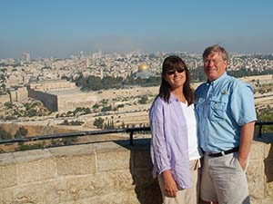
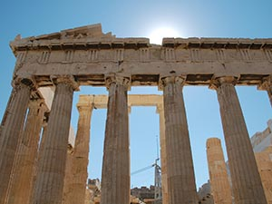
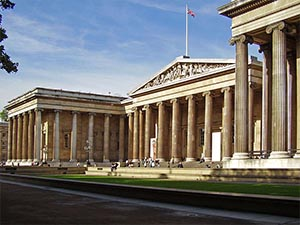

"Once you have visited the Holy Lands you will never hear a sermon, sing a song, listen to a Bible class lesson or read the scriptures in the same way."
You can have a great life experience visiting the Holy Lands. You can walk up steps that Jesus walked on, you can walk on the roads that Paul walked on, and you can see sites that Moses saw. It will be an experience you will never forget. We are talking these trips this year:

On this 9 day trip to Israel you will visit the best biblical sites in Israel. They include Jerusalem, Capernaum, Caesarea, Mt. Carmel, Megiddo, Masada, and Bethlehem, Jordan River and the Sea of Galilee.

On this 21 day trip to Israel, Jordan, Egypt, Greece and Turkey you will see the greatest sites related to Biblical history including the Temple Mount in Jerusalem, Petra in Jordan, the Pyramids in Egypt, Ephesus in Turkey and the Acropolis in Athens.

On this 14 day tour of 5 great museums in London, Paris, Athens, Cairo and Jerusalem you will visit the great museums with Bible artifacts. In the British Museum you will see the Rosetta Stone, the Elgin Marbles, Lachish freeze, and the Cyrus cylinder. In the Louvre you will see the Code of Hammurabi, the Moabite stone and glazed brick walls from the palace of Susa. In Athens you will see many remains from the Acropolis. In the Cairo Museum you will see the treasures of King Tut and the Merneptah Steele. In the Israel Museum you will see the oldest written scriptures and the Tel Dan inscription with King David's name on it.